INTRO TO CENSUS DATA AND MAPPING
Data Practicum Community Analytics
Prof. Anthony Howell
Agenda
- Working with US Census Data
- Introduction to Mapping
- Creating Maps in R (Part 1)
- w/
tigris&getcensus
- w/
- Creating Maps in R (Part 2)
- w/
tidycensus
- w/
Working with US Census Data
Data scientists using R often run into two problems:
Understanding what data the Census Bureau publishes.
Understanding what R packages on CRAN are available to help with their project.
Intro to Census Data
The U.S. Census Bureau is the premier source of data about US people, places and economy.
This makes the Bureau a natural source of information for data analysts.
- The Census Bureau publishes two types of data:
- demographic and geographic
Demographic Data
The Census Bureau conducts over 100 Censuses, Surveys and Programs.
You can view the full list of programs here.
Top 5 most popular(by API requests):
- American Community Survey
- Decennial Census of Population and Housing
- Population Estimates Program
- Survey of Business Owners
- International Data Base
American Community Survey (ACS).
- Info on ancestry, education, income, language, migration, disability, employment, housing
- Used to allocate government funding, track shifting demographics, plan for emergencies, and learn about local communities.
- Sent to approximately 295,000 addresses monthly (or 3.5 million per year)
- largest household survey that the Census Bureau administers
1, 3, 5 year ACS estimates
Geographic Data
The Census Bureau’s geographic hierarchy!
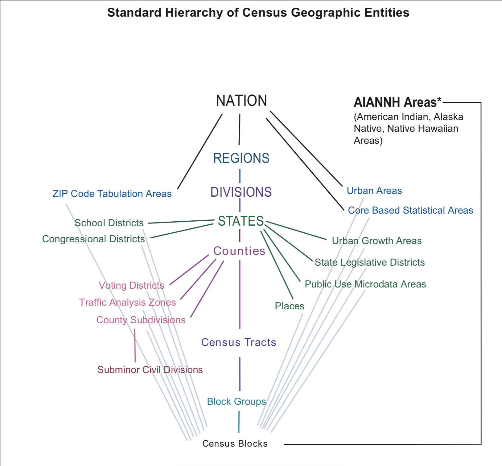
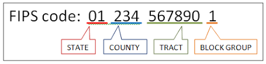
What is a Census Tract?
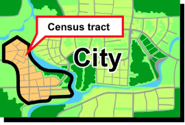
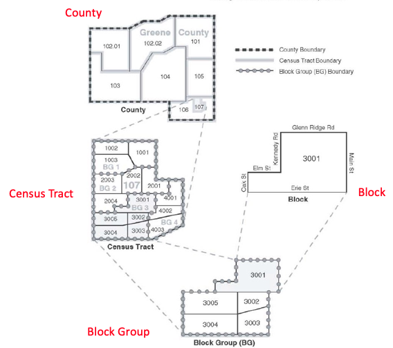
Designed to be relatively homogeneous, e.g. population characteristics, economic status, living conditions
Average about 4,000 inhabitants
Phoenix Census Tracts
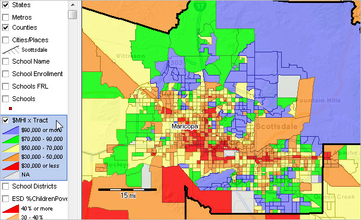
Introduction to Mapping
Every house, every tree, every city has its own unique latitude and longitude coordinates.
There are two underlying important pieces of information for spatial data:
- Coordinates of the object (Lat/Long)
- How the Lat/Long relate to a physical location on Earth
- Also known as coordinate reference system or CRS
CRS

- Geographic
- Uses three-dimensional model of the earth to define specific locations on the surface of the grid
- longitude (East/West) and latitude (North/South)
- Projected
- A translation of the three-dimensional grid onto a two-dimensional plane
CRS
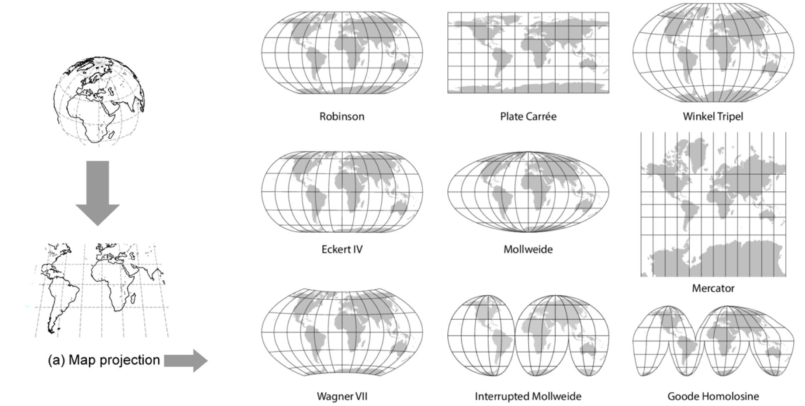
Types of Spatial Data
- Raster
- Are values within a grid system
- Example: Satellite imagery
- Vector
- Based on points that can be connected to form lines and polygons
- Located with in a coordinate reference system
- Example: Road map
Raster
- Discrete (Land Cover/use maps)
- Discrete values represent classes, i.e. 1=water; 2=forest 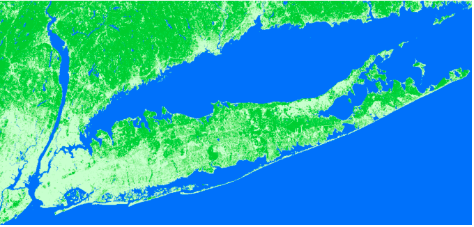
- Continuous (Satellite Imagery)
- Grid cells with gradual changing
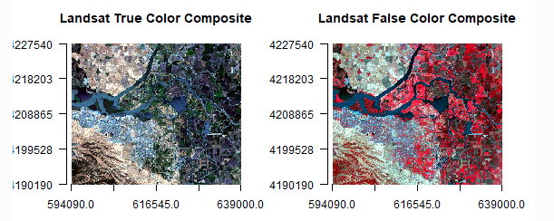
Vector
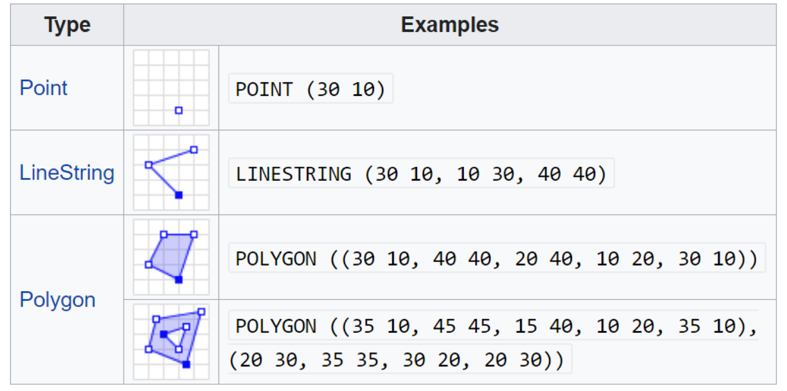
Vector (Cont.)
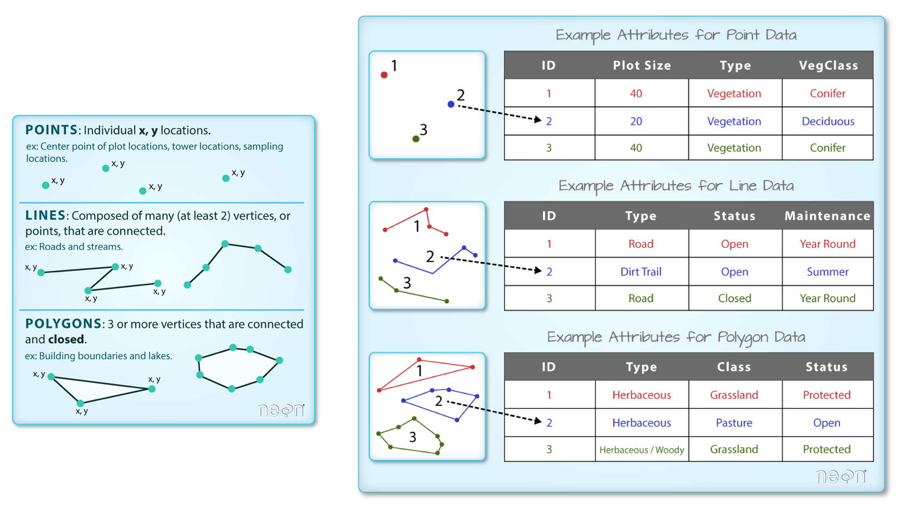
Shape files for Vector
Though we refer to a shape file in the singular, it’s actually a collection of at least three basic files:
- .shp - lists shape and vertices
- .shx - has index with offsets
- .dbf - relationship file between geometry and attributes (data)
All files must be present in the directory and named the same (except for the file extension) to import correctly.
Mapping
Use vector data and shapefiles to create choropleth maps
Household Income by Census Tract 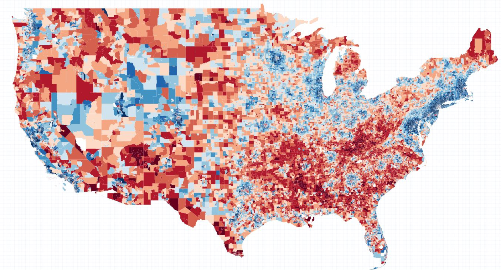
Creating Maps in R
- Download map shapefiles and census data
- via online downloads (Old School – and it sucks!)
- via API w/
tigrisfor maps &getcensusfor census data - via API w/
tidycensusfor maps and census data (WINNER!)
Old School Mapping Approach
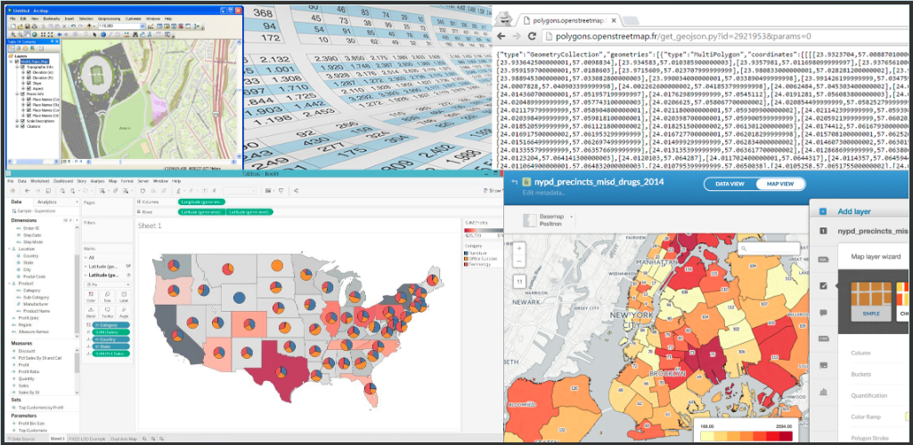
Old School Mapping Approach
- Download data and transform data
- Excel
- Find and download shapefiles
- Census TIGER
- Import maps and join with data and style
- ArcGIS or QGIS
- Export and tweak for style further
- Tableau, CartoDB, Illustrator
Download Data
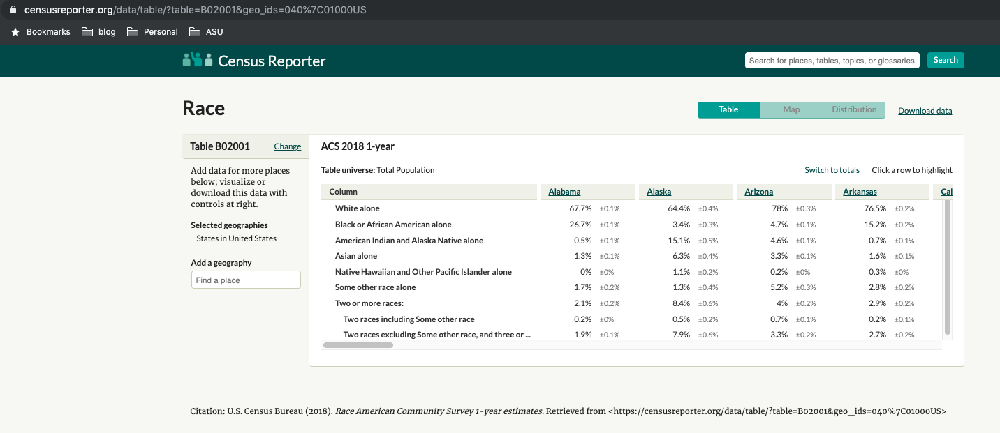
Find and Download Shapefiles
Download a shape file of state boundaries from the Census. 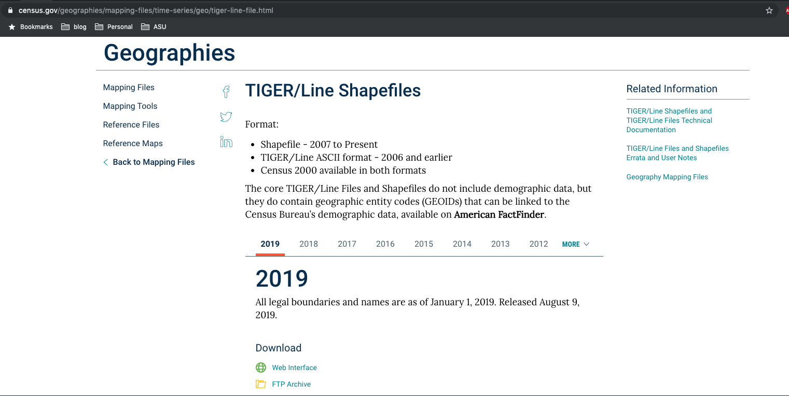
Find downloaded data on computer
Point R (or other spatial software) to correct filepath find File Paths, folders, etc.
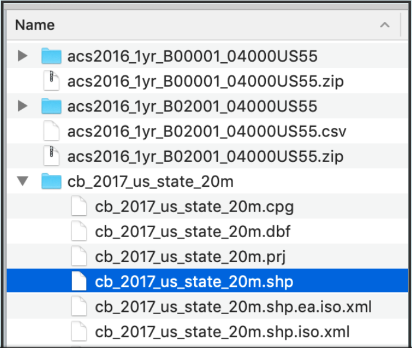
- Time consuming and difficult (esp. for beginners) to even read-in the shapefile and census data to spatial software
New Approach! Downloading shape files directly into R
Using the tigris package, which lets us download Census shapefiles directly into R without having to unzip and point to directories, etc.
Simply call any of these functions (with the proper location variables):
tracts()counties()school_districts()roads()
Downloading Census data into R via API
Instead of downloading data from the horrible-to-navigate Census FactFinder or pleasant-to-navigate CensusReporter.org we can pull the code with the censusapi package from Hannah Recht, of Bloomberg.
Load the censusapi library
First, sign up for a census key.
Second, replace YOURKEYHERE with your Census API key.
# Add key to .Renviron
Sys.setenv(CENSUS_KEY="YOURKEYHERE")
# Check to see that the expected key is output in your R console
Sys.getenv("CENSUS_KEY")Look up Census tables
Check out the dozens of data sets you can access.
apis <- listCensusApis()
View(apis)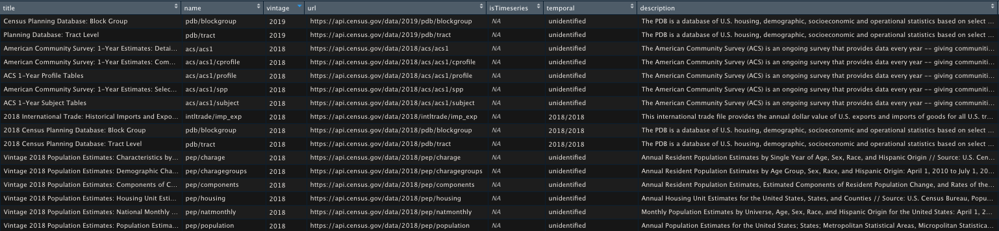
Downloading Census data
We’ll focus on using the getCensus() function from the package. It makes an API call and returns a data frame of results.
These are the arguments you’ll need to pass it:
name- the name of the Census data set, like “acs5” or “timeseries/bds/firms”vintage- the year of the data setvars- one or more variables to accessregion- the geography level of data, like county or tracts or state
Get Census metadata
You can use listCensusMetadata() to see what tables might be available from the ACS Census survey.
acs_vars <- listCensusMetadata(name="acs/acs5", type="variables", vintage=2016)
View(acs_vars)Slow Process! Please don’t run this right now.
Search for data variable names
In the search finder window, type variable of interest, i.e. median household income
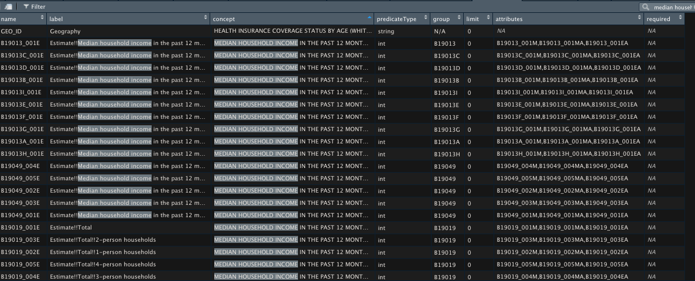
Census variables names
- B21004_001E, B19013_001M, etc.
- This is reference to a Census table of information.
- For example, A14009 is Average Household Income by Race for that polygon of data in that row
- When you export data from the Census, the variables get translated to this sort of format
- You’ll have to remember when you download it or look it up.
Downloading median income
az_income <- getCensus(name = "acs/acs5", vintage = 2016,
vars = c("NAME", "B19013_001E", "B19013_001M"),
region = "county:*", regionin = "state:04")
head(az_income)## state county NAME B19013_001E B19013_001M
## 1 04 001 Apache County, Arizona 32460 1381
## 2 04 003 Cochise County, Arizona 45383 1470
## 3 04 005 Coconino County, Arizona 51106 1578
## 4 04 007 Gila County, Arizona 40593 1420
## 5 04 009 Graham County, Arizona 47422 3914
## 6 04 011 Greenlee County, Arizona 51813 5787Data Exploration
## Data Wrangling
az_income %>%
rename(MHI_est = B19013_001E ,
MHI_moe = B19013_001M)%>%
mutate(se = MHI_moe/1.645,
cv = (se/MHI_est)*100) %>% #CV is the coefficient of variation
##Plot
ggplot( aes(x = MHI_est,
y = reorder(NAME, MHI_est))) +
geom_point(color = "black", size = 2) +
geom_errorbarh(aes(xmin = MHI_est - MHI_moe,
xmax = MHI_est + MHI_moe )) +
labs(title = "Median Household Income by County:",
subtitle =
paste0("Arizona US Census/ACS5 2016"),
x = "Median Household Income", y="") +
scale_x_continuous(labels = scales::dollar) +
theme_minimal() +
theme(panel.grid.minor.x = element_blank(),
panel.grid.major.x = element_blank())Data Exploration
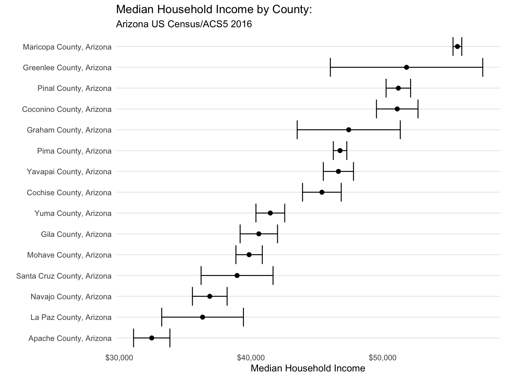
Downloading Arizona Shapefile
First, let’s make sure the shape files download as sf files (because it can also handle sp versions, as well)
If cb is set to TRUE, it downloads a generalized (1:500k) counties file. Default is FALSE (the most detailed TIGER file).
What the az object looks like
View(az)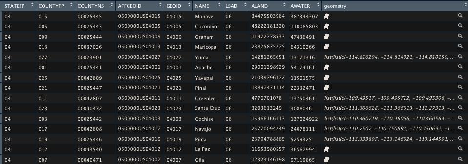
What are the variables
- STATEFP is the state fips code.
- That stands for the Federal Information Processing Standard. It’s a standardized way to identify states, counties, census tracts, etc.
- GEOID is also part of the fips code.
- In this instance it’s only two digits wide.
- The more specific you get into the Census boundaries, the longer the number gets.
- geometry
- This is the Coordinate Reference System (CRS) data
Mapping Arizona
ggplot(az) +
geom_sf() +
theme_void() +
theme(panel.grid.major = element_line(colour = 'transparent')) +
labs(title="Arizona counties")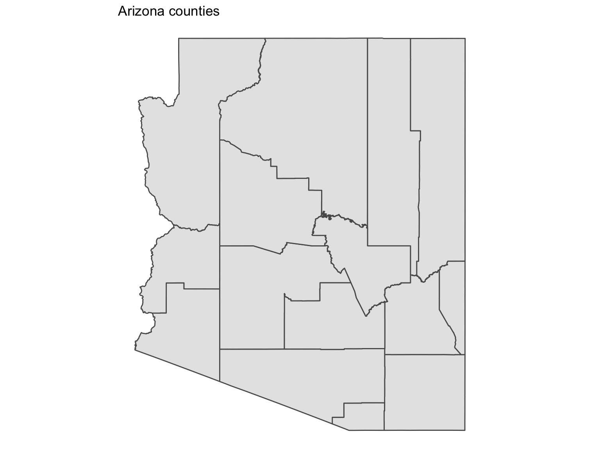
Notes on some code
theme_void() +
theme(panel.grid.major = element_line(colour = 'transparent')) +- theme_void() is a special function that gets rid of grids and gray space for maps
- theme() is how you can alter specific styles of the visualization
- theme_void() is a collection of individual theme() modifications
Time to join the map data and median income data
Join Income Data (az_income) and Spatial (az) Map Data
state county NAME B19013_001E B19013_001M
1 04 001 Apache County, Arizona 32460 1381 [1] "015" "005" "009" "013" "027" "001" "025" "021" "011" "023" "003"
[12] "017" "019" "012" "007"Did it work?
## [1] "STATEFP" "COUNTYFP" "COUNTYNS" "AFFGEOID" "GEOID"
## [6] "NAME.x" "LSAD" "ALAND" "AWATER" "state"
## [11] "NAME.y" "B19013_001E" "B19013_001M" "geometry"## Simple feature collection with 1 feature and 13 fields
## geometry type: MULTIPOLYGON
## dimension: XY
## bbox: xmin: -114.7548 ymin: 34.20963 xmax: -112.5293 ymax: 37.00075
## epsg (SRID): 4269
## proj4string: +proj=longlat +ellps=GRS80 +towgs84=0,0,0,0,0,0,0 +no_defs
## STATEFP COUNTYFP COUNTYNS AFFGEOID GEOID NAME.x LSAD ALAND
## 1 04 015 00025445 0500000US04015 04015 Mohave 06 34475503964
## AWATER state NAME.y B19013_001E B19013_001M
## 1 387344307 04 Mohave County, Arizona 39856 1002
## geometry
## 1 MULTIPOLYGON (((-114.7532 3...Arizona median income
ggplot(az4ever) +
geom_sf(aes(fill=B19013_001E), color="white") +
theme_void() +
theme(panel.grid.major = element_line(colour = 'transparent')) +
scale_fill_distiller(palette="Oranges", direction=1, name="Median income") +
labs(title="2016 Median income in Arizona counties", caption="Source: US Census/ACS5 2016")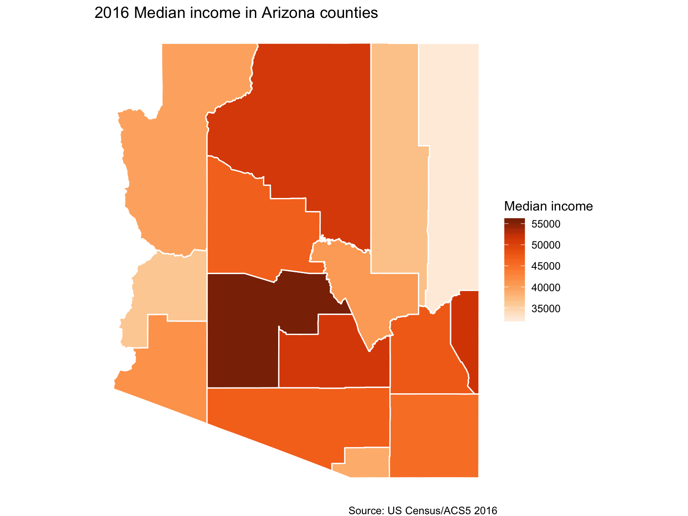
Download Census data and shapefiles together
Newest package for Census data: tidycensus
With tidycensus, you can download the shape files with the data you want already attached. No joins necessary.
Let’s get right into mapping. We’ll calculate unemployment percents by Census tract in Maricopa County. It’ll involve wrangling some data. But querying the data with get_acs() will be easy and so will getting the shape file by simply passing it geometry=T.
Load up tidycensus
Pass it your Census key.
Search for variables
VarSearch <- load_variables( 2017, "acs5", cache=TRUE )
# convert all letters to upper case
VarSearch$label <- toupper(VarSearch$label)
unemployment <- VarSearch %>%
mutate( contains.unemployment = grepl( "UNEMPLOYED", label ) ) %>%
#Create new variable with Mutate that has UNEMPLOYED in title using grepl
filter( contains.unemployment )
head(unemployment, 1)## # A tibble: 1 x 4
## name label concept contains.unemplo…
## <chr> <chr> <chr> <lgl>
## 1 B12006… ESTIMATE!!TOTAL!!NEVER M… MARITAL STATUS BY SE… TRUESearch for Variables with View
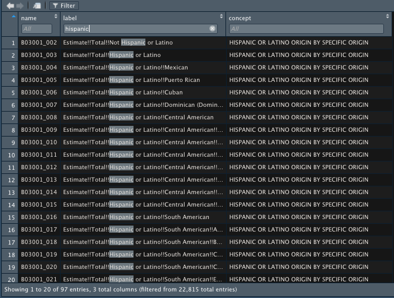
- Select
Filter(top left). Inlabelbox, typeHispanic - We want the total non-hispanic population (
B03001_002)
Getting unmployment figures
jobs <- c(labor_force = "B23025_005E",
unemployed = "B23025_002E")
arizona <- get_acs(geography="tract", year=2017, survey="acs5",
variables= jobs, county = "Maricopa",
state="AZ", geometry=T)## Simple feature collection with 6 features and 5 fields
## geometry type: MULTIPOLYGON
## dimension: XY
## bbox: xmin: -112.0654 ymin: 33.46573 xmax: -111.04 ymax: 34.03733
## epsg (SRID): 4269
## proj4string: +proj=longlat +ellps=GRS80 +towgs84=0,0,0,0,0,0,0 +no_defs
## GEOID NAME variable
## 1 04013010101 Census Tract 101.01, Maricopa County, Arizona B23025_002
## 2 04013010101 Census Tract 101.01, Maricopa County, Arizona B23025_005
## 3 04013010102 Census Tract 101.02, Maricopa County, Arizona B23025_002
## 4 04013010102 Census Tract 101.02, Maricopa County, Arizona B23025_005
## 5 04013030401 Census Tract 304.01, Maricopa County, Arizona B23025_002
## 6 04013030401 Census Tract 304.01, Maricopa County, Arizona B23025_005
## estimate moe geometry
## 1 1681 333 MULTIPOLYGON (((-111.7869 3...
## 2 87 59 MULTIPOLYGON (((-111.7869 3...
## 3 1767 431 MULTIPOLYGON (((-112.0654 3...
## 4 54 47 MULTIPOLYGON (((-112.0654 3...
## 5 1354 296 MULTIPOLYGON (((-111.9648 3...
## 6 30 49 MULTIPOLYGON (((-111.9648 3...Transforming the data
library(tidyr)
arizona<-arizona %>%
mutate(variable=case_when(
variable=="B23025_005" ~ "Unemployed",
variable=="B23025_002" ~ "Workforce")) %>%
select(-moe) %>%
spread(variable, estimate) %>% #Spread moves rows into columns
mutate(percent_unemployed=round(Unemployed/Workforce*100,2)) head(arizona)Mapping the data
library(tidyr)
ggplot(arizona, aes(fill=percent_unemployed)) +
geom_sf(color="white") +
theme_void() + theme(panel.grid.major = element_line(colour = 'transparent')) +
scale_fill_distiller(palette="Reds", direction=1, name="Estimate") +
labs(title="Percent unemployed in Maricopa County", caption="Source: US Census/ACS5 2016") +
NULL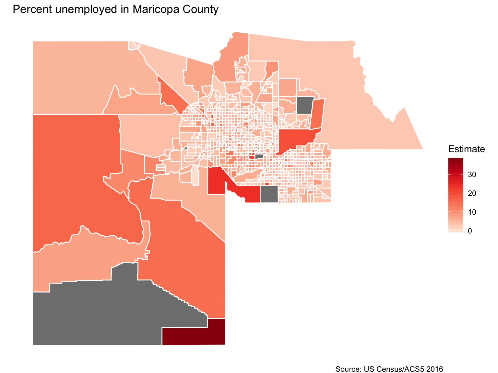
Faceting maps (Small multiples)
Faceting maps (Small multiples)
head(maricopa)## Simple feature collection with 6 features and 7 fields
## geometry type: MULTIPOLYGON
## dimension: XY
## bbox: xmin: -112.0654 ymin: 33.46573 xmax: -111.04 ymax: 34.03733
## epsg (SRID): 4269
## proj4string: +proj=longlat +ellps=GRS80 +towgs84=0,0,0,0,0,0,0 +no_defs
## GEOID NAME variable
## 1 04013010101 Census Tract 101.01, Maricopa County, Arizona White
## 2 04013010101 Census Tract 101.01, Maricopa County, Arizona Black
## 3 04013010101 Census Tract 101.01, Maricopa County, Arizona Asian
## 4 04013010101 Census Tract 101.01, Maricopa County, Arizona Hispanic
## 5 04013010102 Census Tract 101.02, Maricopa County, Arizona White
## 6 04013010102 Census Tract 101.02, Maricopa County, Arizona Black
## estimate moe summary_est summary_moe geometry
## 1 4814 513 4915 517 MULTIPOLYGON (((-111.7869 3...
## 2 0 12 4915 517 MULTIPOLYGON (((-111.7869 3...
## 3 19 33 4915 517 MULTIPOLYGON (((-111.7869 3...
## 4 78 104 4915 517 MULTIPOLYGON (((-111.7869 3...
## 5 4408 592 4602 602 MULTIPOLYGON (((-112.0654 3...
## 6 25 38 4602 602 MULTIPOLYGON (((-112.0654 3...Transform and map the data
Combine data wrangling and mapping into 1
library(viridis)
maricopa %>%
mutate(pct = 100 * (estimate / summary_est)) %>%
ggplot(aes(fill = pct, color = pct)) +
facet_wrap(~variable) +
geom_sf() +
coord_sf(crs = 26915) +
scale_fill_viridis(direction=-1) +
scale_color_viridis(direction=-1) +
theme_void() +
theme(panel.grid.major = element_line(colour = 'transparent')) +
labs(title="Racial geography of Maricopa County, Arizona", caption="Source: US Census 2010")Transform and map the data
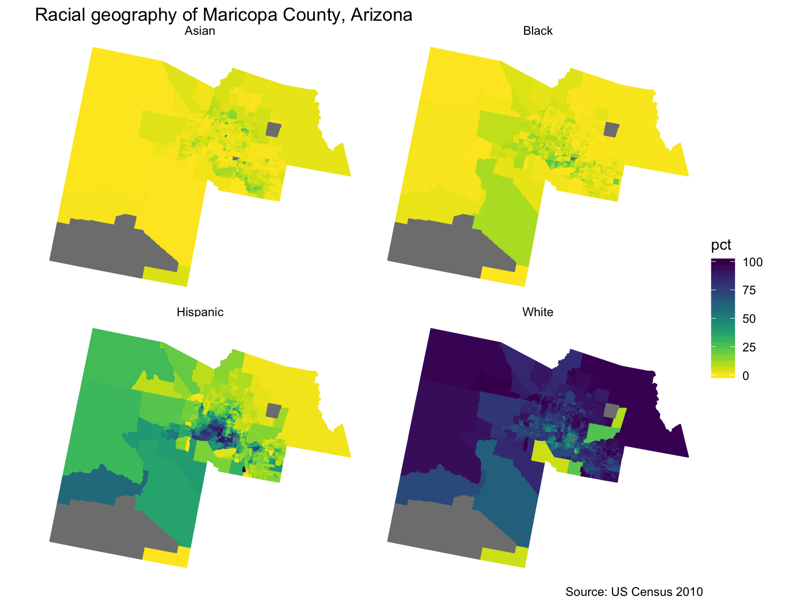
From here, easy to create US maps
Poverty = B17001_002
county_pov <- get_acs(geography = "county",
variables = "B17001_002",
summary_var = "B17001_001",
year = 2017,
survey = "acs5",
geometry = TRUE,
shift_geo = TRUE) %>%
mutate(pctpov = 100 * (estimate/summary_est))
## Plot
ggplot(county_pov) +
geom_sf(aes(fill = pctpov), color=NA) +
coord_sf(datum=NA) +
labs(title = "Percent of population in poverty by county",
subtitle = "Alaska and Hawaii are shifted and not to scale",
caption = "Source: ACS 5-year, 2016",
fill = "% in poverty") +
scale_fill_viridis(direction=-1)US County Poverty Map
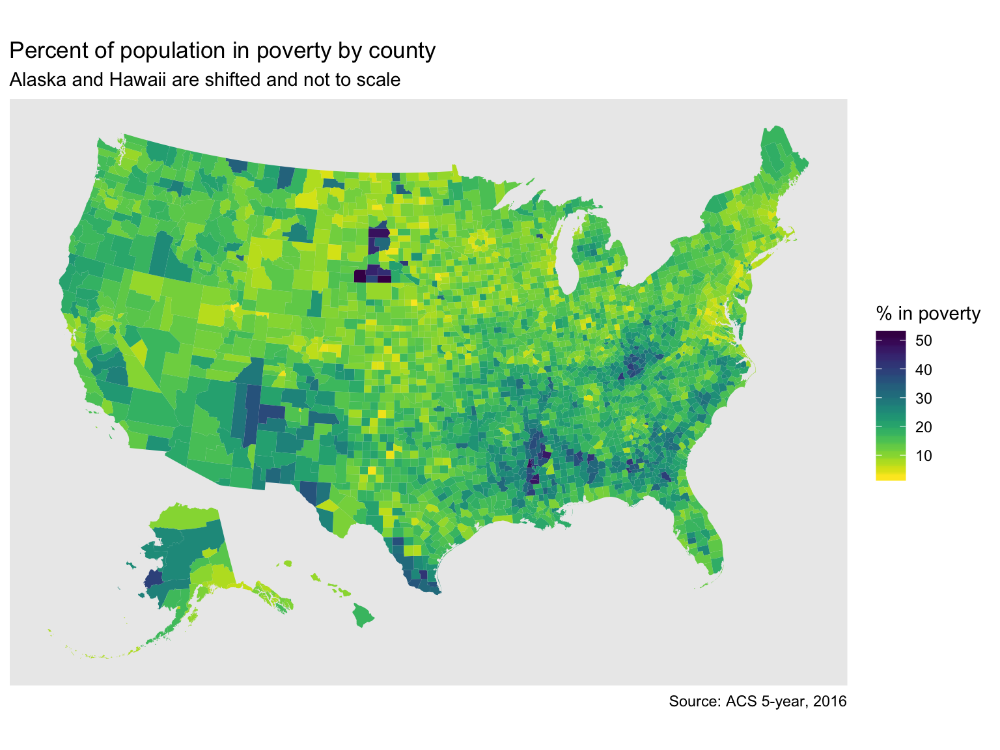